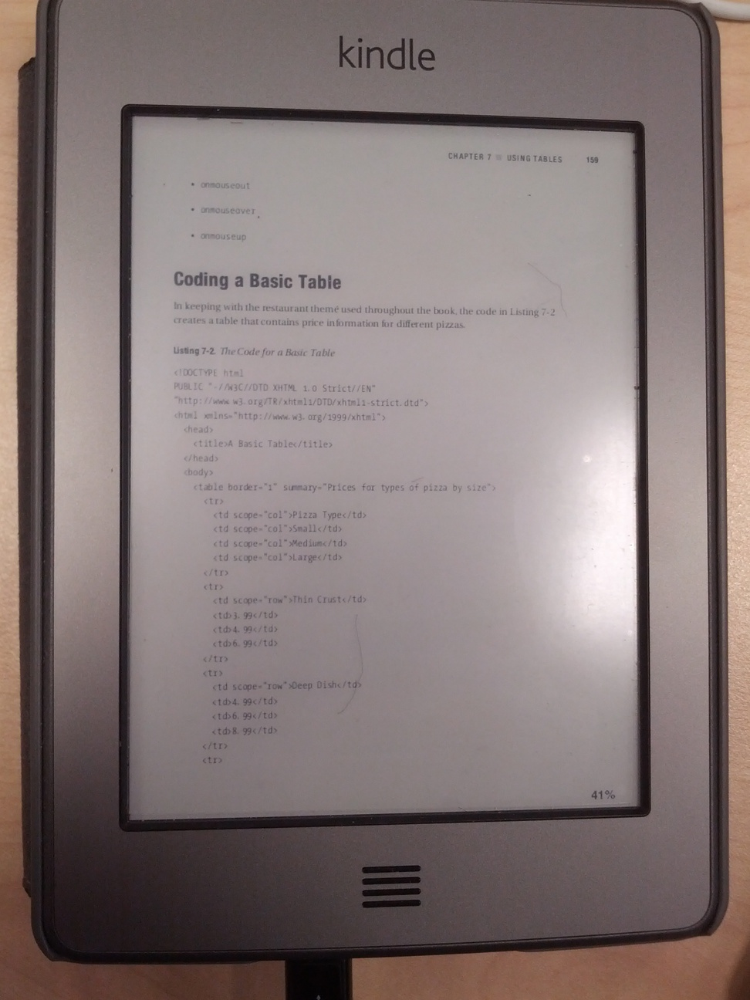
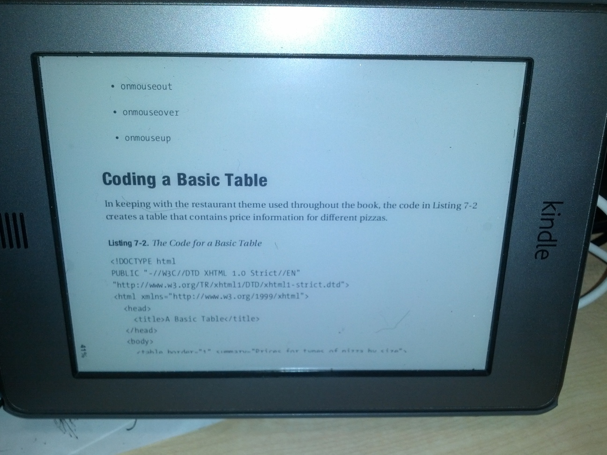

用bash脚本并发执行程序
在多核时代，越来越多的情况下如果能并发执行程序将会大大提升效率。比如在 写我的博客的时候，它是发布在 github page 上的静态页面，所以每次我更新页 面布局之后，我需要重新生成每个页面。我的博客是用org-mode写的，所以发布 的时候要用Emacs脚本来发布，一开始我的做法是这样的（伪bash和elisp代码）：
for x in *.org; do emacs --batch -e ' (progn (init-org-publishing-vars) (org-publish-as-html '$x'))' done
但发现这样做太慢了，我有100篇博客的话，我要启动100次Emacs，所以我的（第 一次）优化是这样的，把这100个博客的发布写到一个elisp脚本里，然后跑一次 Emacs就可以了：
cat <<EOF > tmp-export.el (progn (init-org-publishing-vars) $(for x in *.org do echo "(org-publish-as-html $x)" done) ) EOF emacs --batch -l tmp-export.el
但是发现这样还是太慢，最终，我还是回到了一个.org文件调用一次Emacs，但这 回，我用上了并发执行。
所谓并发执行，其实很简单，只要在第一段伪代码的Emacs调用后面加上一个
& ，把进程放到后台就可以了。但有个陷阱是这样的话系统有可能进入
thrashing（抽风）状态，因为同时创造出的后台进程太多了（100篇博客可能不
会有太大问题，但并发执行1万个其他的任务的话呢？）。
我的解决方案是加上flock，比如我通过-j10指定最多只能有10个并发任务（类似
于 make 程序的选项，j for jobs），则我会创建10个临时锁文件，所有任务
在开始的时候必须先锁住其中一个锁文件，退出的时候会释放，这样下一个在等
待这个文件锁的任务才能开始执行。
以重新发布我的所有博客文章为例，脚本的用法是：
run-in-parallel 'org-export' $(find blog -name '*.org')
另一个更完整的例子是：
time run-in-parallel -I %N -j 10 'echo %N; sleep 1' $(seq 1 20)
处理完选项参数（-I和-j）之后，剩下的1+X个参数中，第一个代表要执行的任务
命令，其余的X个则是代表总个要执行的X个任务，每一个需要传进去的参数。所
以上面这个例子的意思是，-I（偷师于xargs的-I选项） %N表示任务命令中出现
的%N要用后面的参数代替；然后对1到20的每个整数（用变量x表示），执行
echo $x ，然后sleep 1秒。最终执行完需要多少时间呢？如果不并发的话相信
大家都知道结果至少要20秒，但用了上面的并发脚本，最终的结果是2.5秒。
还有一个应用的场景是为我的Kindle设备裁剪pdf文件。Kindle Touch上看一般的 pdf文件待别痛苦，放大、缩小、横竖屏转动支持都很差，所以我用pdfjam工具箱 里的工具写了个脚本，让重新生成的pdf更适于在Kindle上阅读：
- 把原pdf文件四周的白边切掉
- 把每页切成两页（留一点余量，保证某一行在上半页被切断的话，在下半页还 能看到完整的这一行，也就是说要切两次）。
- 再拼回去
- 转动90度。
这里的第一步和第二步用上run-in-parallel的话真的是——天下武功，无坚不破， 唯快不破:-)
最后处理过前后的pdf文件在Kindle上的效果见图。
之前： 
之后： 
各个脚本的位置：run-in-parallel， pdf-for-kindle， 剩下一些辅助的脚本也 都在 system-config 上可以找到。